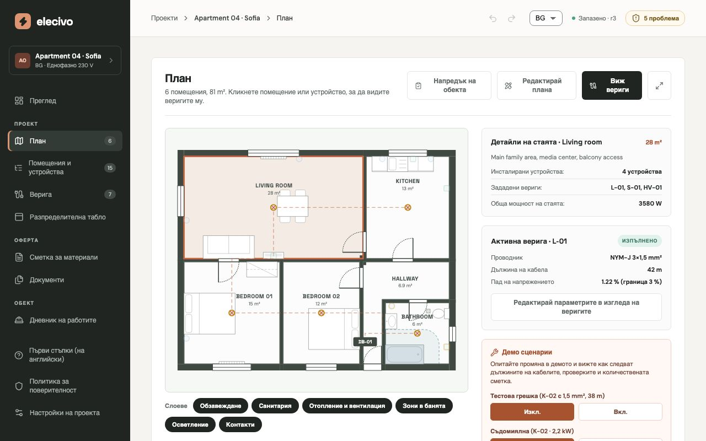
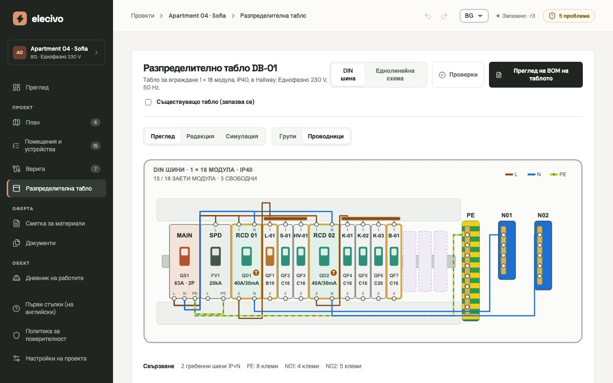
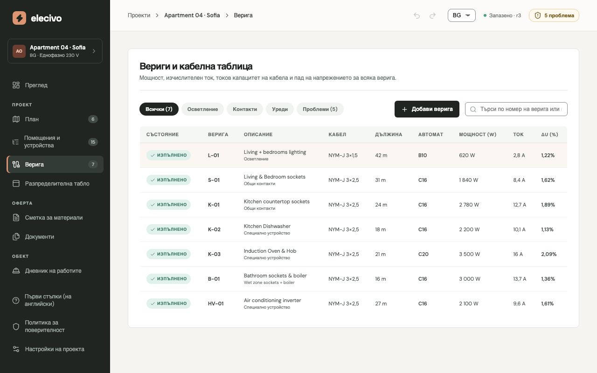
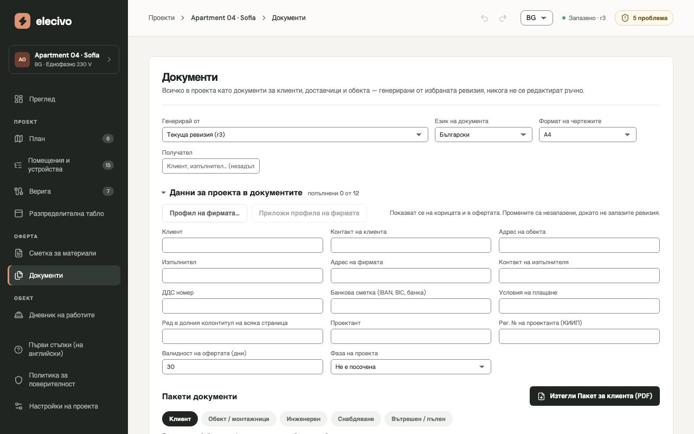

Електропроекти за апартаменти — от плана до офертата
Начертайте помещенията, поставете контакти, ключове и осветление, а Elecivo ги групира във вериги, оразмерява кабелите и автоматите, проверява проекта и го остойностява. Всяка стойност идва от един проект, затова планът, таблото, количествената сметка и офертата винаги съвпадат.
Опитайте демото Към базата знания
Демото работи във вашия браузър. Без регистрация и нищо от това, което правите, не напуска устройството ви.

Един проект, всички документи
План
Пренесете измерен чертеж или начертайте помещенията с точност до милиметър; стените, вратите и прозорците се получават от тях.
Устройства и вериги
Поставете контакти, ключове, осветление и уреди. Elecivo предлага веригите и прокарва кабелите по стените.
Проверки
Допустим ток на кабела, пад на напрежението, съгласуване на автоматите, натоварване на ДТЗ, зони в банята и пусков ток — проверени отново при всяка промяна.
Разпределително табло
DIN шини, еднолинейна схема, свързване и етикети, със симулатор, в който изключвате ДТЗ и виждате какво остава без ток.
Материали и оферта
Количествена сметка, труд, поръчки към доставчици и оферта за клиента, с чертежи А3, готови за печат.
На обекта
Дневник на работата, часове на екипа и материали на обекта, следени спрямо проекта.
Опитайте една част
Всяка връзка отваря демо апартамента на един екран, с едно нещо за опитване.
-
План
Преместете контакт и вижте как дължината на кабела и количествената сметка се променят.
-

Разпределително табло
Разгледайте шините и еднолинейната схема; в „Симулация“ изключете ДТЗ.
-

Вериги
Открийте грешката в демо проекта и приложете предложената корекция.
-

Документи
Отворете офертата и чертежите като PDF.
Бележки от практиката
Базата знания събира това, което опитните електротехници знаят: честите грешки, добрата практика и изискванията зад тях. Тези 74 бележки са тези зад проверките, които Elecivo вече прави. Те са чернови, които предстои да бъдат прегледани от проектант, и засега са на английски.
Включете се в пилотния проект
Elecivo се изпробва на реални апартаменти. Ако проектирате или изпълнявате електрически инсталации в жилища и искате да го използвате на обект, отворете задача (issue) и отговорете на няколко въпроса за обекта. Нужен е безплатен акаунт в GitHub.